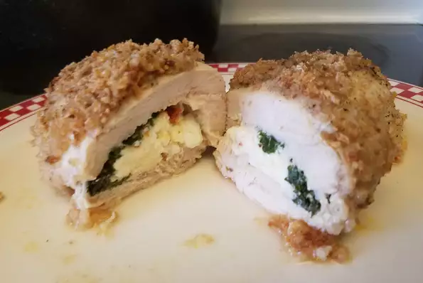

Feta Chicken

Chicken wrapped around tomato-basil feta cheese--simple, succulent, and sensational.
- 6 skinless, boneless chicken breast halves
- 6 ounces tomato basil feta cheese, crumbled
- ¼ cup Italian-style dry bread crumbs, divided
- Preheat oven to 350 degrees F (175 degrees C). Lightly grease a 9x13 inch baking dish.
- Place chicken breasts between 2 pieces of waxed paper. Gently pound chicken with flat side of meat mallet or rolling pin
until about 1/4 inch thick; remove wax paper. Place 1 ounce of feta cheese in the center of each chicken breast, and
fold in half.
- Spread 2 tablespoons bread crumbs in the bottom of the prepared baking dish. Arrange chicken in the dish, and top with
remaining bread crumbs.
- Bake 25 to 30 minutes in the preheated oven, or until chicken is no longer pink and juices run clear.